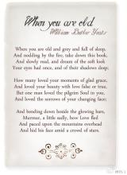

《当你老了》——叶芝
当年华已逝，你两鬓斑白，沉沉欲睡， 坐在炉边慢慢打盹，请取下我的这本诗集， 请缓缓读起，如梦一般，你会重温，
你那脉脉眼波，她们是曾经那么的深情和柔美。
多少人曾爱过你容光焕发的楚楚魅力， 爱你的倾城容颜，或是真心，或是做戏， 但只有一个人！他爱的是你圣洁虔诚的心！
当你洗尽铅华，伤逝红颜的老去，他也依然深爱着你！

炉里的火焰温暖明亮，你轻轻低下头去， 带着淡淡的凄然，为了枯萎熄灭的爱情，喃喃低语， 此时他正在千山万壑之间独自游荡，
在那满天凝视你的繁星后面隐起了脸庞。